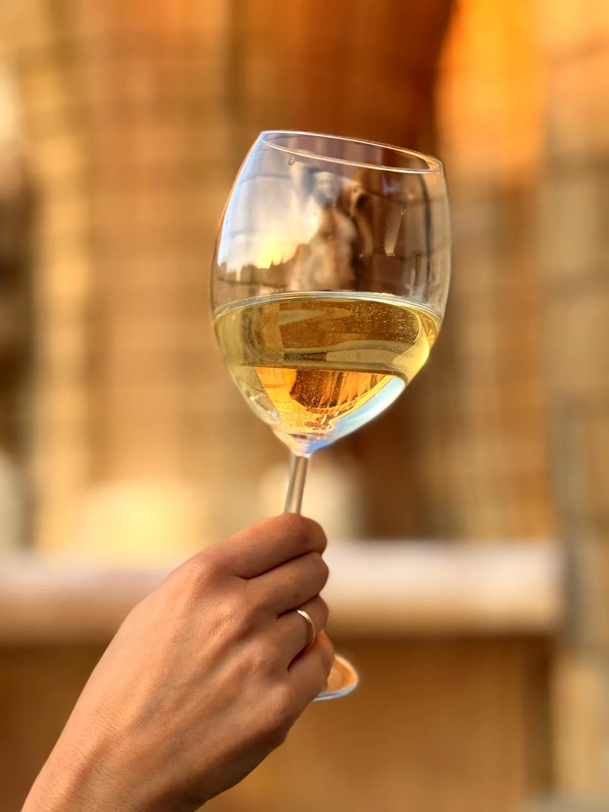
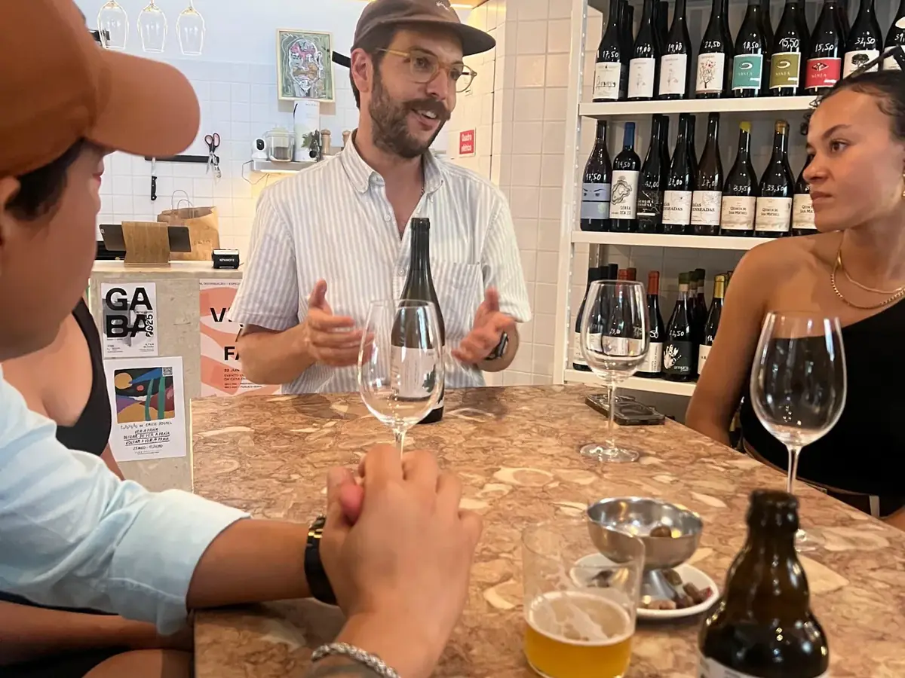
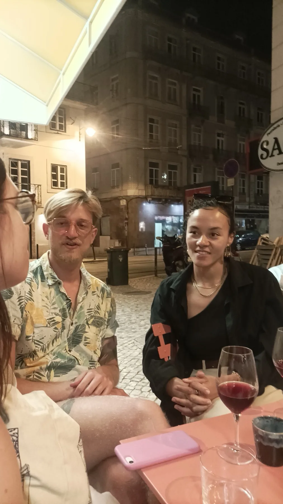
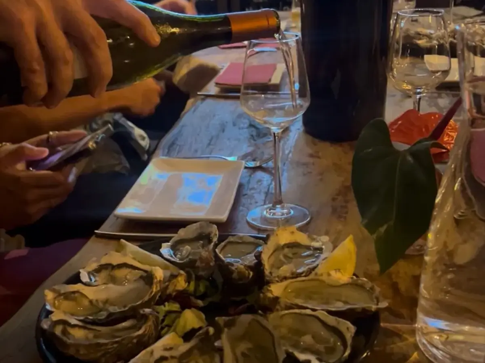
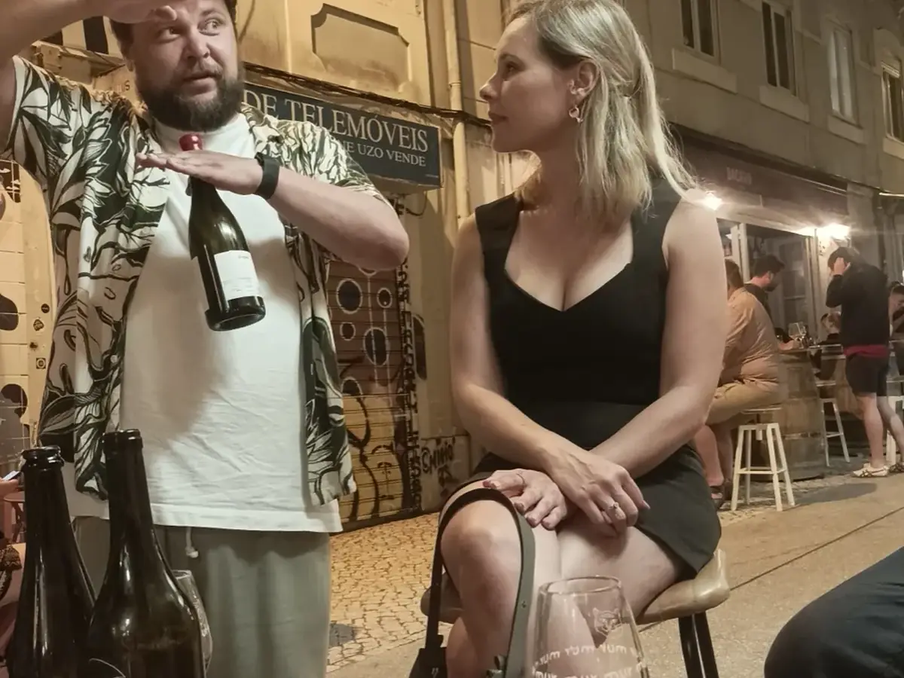
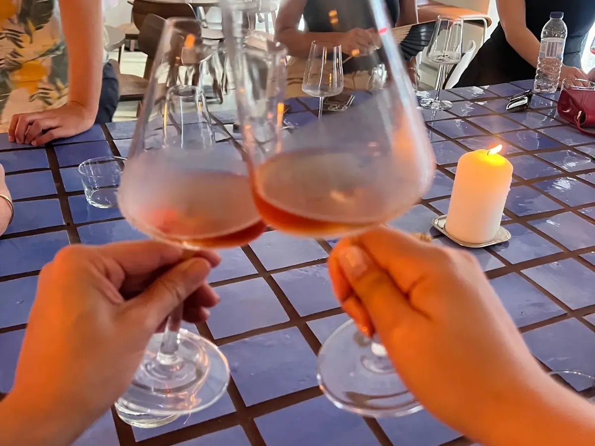

Lisbon · Evening
Graça & Anjos After Dark
A guided evening wine walk through two of Lisbon's most authentic neighbourhoods — hidden wine bars, Portuguese producers, petiscos, and the city locals see at night.
Duration
Evening · 3–4 hrs
Group size
Up to 10 guests
Region
Lisbon
From
€80 pp
An evening built around the Lisbon you don't find by walking past it.
Graça and Anjos sit on the slower, older side of Lisbon — narrow streets, old tiles, and neighbourhood bars that were here long before either district made it onto a map, the kind that close only when the last guest leaves. After Dark is a guided evening wine walk through both, built for travellers who want to drink with locals rather than next to them.
Four hidden wine bars across one evening. Portuguese natural and low-intervention wines, regional petiscos along the way, a viewpoint between stops, and a host who actually knows the people pouring. Small private groups. The Lisbon wine scene as the people shaping it experience it themselves.
Your Evening Unfolds
Four wine bars, one Lisbon evening.

I
A Local Favourite to Begin
Start the evening at a woman-owned neighbourhood wine bar loved by locals. Discover a carefully curated selection of Portuguese wines — including natural and low-intervention producers — paired with seasonal snacks that showcase regional flavours. Two wines in, you'll already see how Portugal's new generation of winemakers is rewriting tradition.

II
Portuguese Wine Through Local Eyes
Continue to one of the neighbourhood's most beloved gathering places. This proudly Portuguese-led venue celebrates regional wines and independent producers, offering insight into the diversity of Portugal's wine regions and styles. Expect a relaxed atmosphere, authentic hospitality and wines chosen by people who genuinely love sharing them.

III
Bubbles & Views
Pause for sparkling wine paired with carefully selected Portuguese produce. With one of Lisbon's most beautiful viewpoints nearby, this stop is built to slow you down — the city below, a glass in hand, and the quiet pleasure of seeing Portuguese food and wine work together in perfect harmony.

IV
The Grand Finale
End the evening at one of Lisbon's most respected wine destinations. Known for an exceptional team, deep wine knowledge and a carefully curated tasting programme, this final stop brings together everything you've discovered along the way. Outstanding Portuguese wines and petiscos, personalised recommendations for what to drink next, and an open invitation to keep going — whether that's dinner nearby or a wander toward the illuminated castle views that make Lisbon evenings unforgettable.
What's included
Everything taken care of.
Four wine bars
Hand-picked, hidden, and almost always full of locals.
Eight Portuguese wines
Two at each stop — natural, low-intervention and regional.
Petiscos along the way
Seasonal Portuguese small plates paired with each pour.
Private group
Up to ten guests — your party only, never shared.
Local wine guide
A host who actually knows the people pouring.
A Lisbon viewpoint
One of the city's best, written into the route.

★★★★★
"Loved it — 10/10. We visited four different wine bars and tasted so many varieties I'd never had before, and the snacks were great too. I ended up staying out afterwards with the others because we were having so much fun and didn't want the night to end. Our host Laura was fantastic — I'll go again soon."
Joshua Strydom · Google review
Pricing
One price, all in.
Price per person
€80per person
Private groups of up to 10 guests
All-inclusive · four neighbourhood wine bars, petiscos and hosting · no booking fees
June offer · €80 · €85 from July
Good to know
Questions, answered.
Where does the evening start and end?
How much walking is there?
What's included in the price?
How big are the groups?
Is it suitable for everyone?
Can you accommodate dietary needs or guests who don't drink wine?
Discover the Lisbon locals know.
Tell us your dates and group size — we'll secure your evening in Graça and Anjos.
More Classic experiences